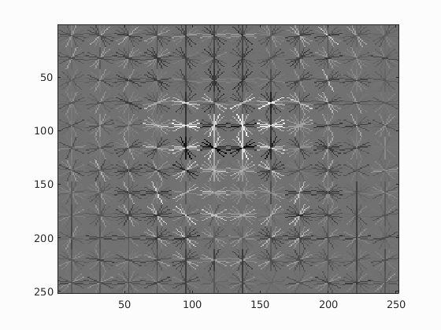
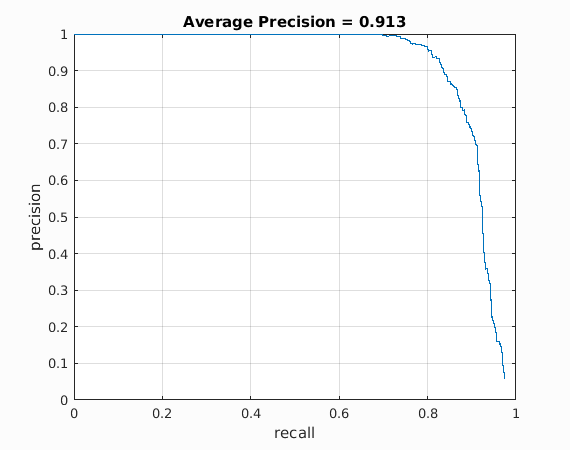
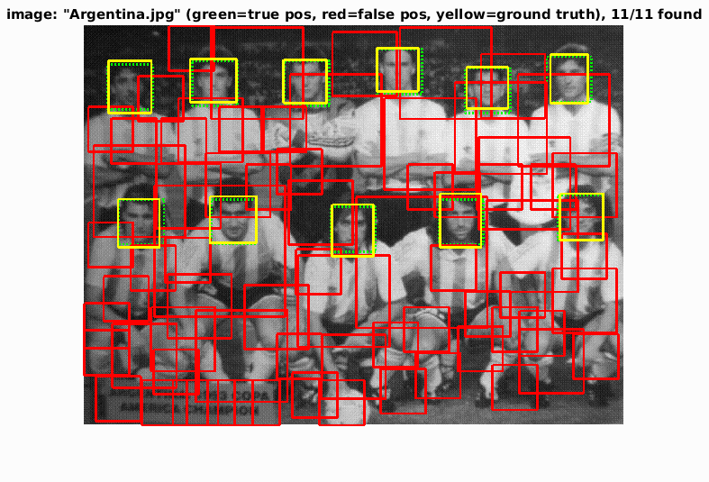
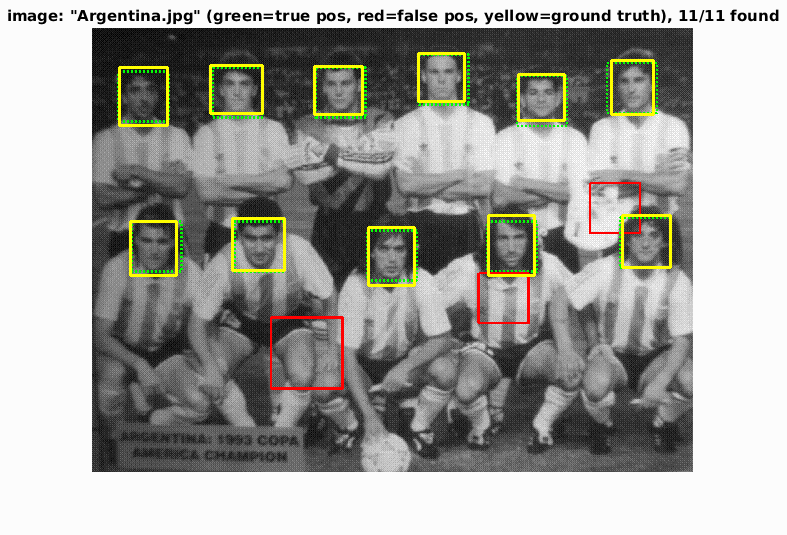
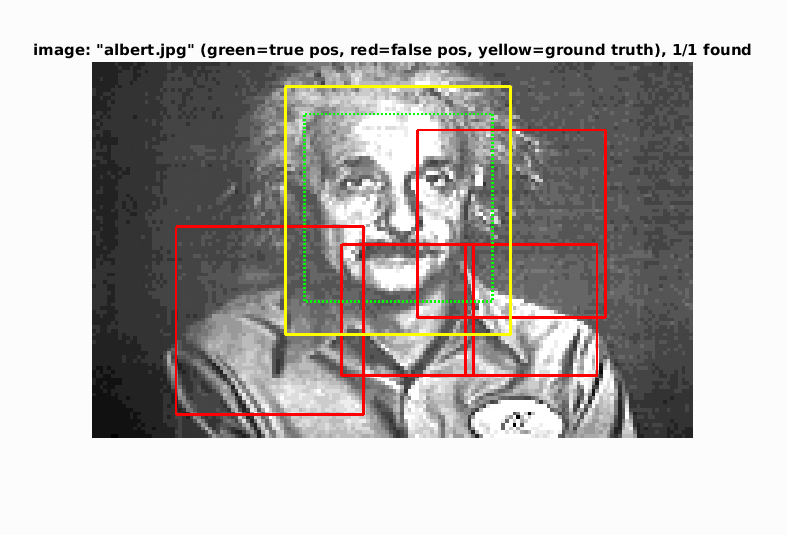
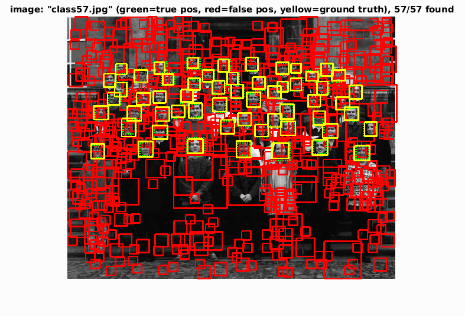

Project 5 / Face Detection with a Sliding Window
This detector is a pipeline of steps. First, a large sample of cropped face images are converted into HOG space is saved. Second, a large sample of images containing no faces is used to generate negative examples in the HOG space. However, to get a wide range of types of images, many different images are need. However, this would generate an unreasonable amount of data. To reduce the number of samples while maintaining the breadth, an equal number of random samples are taken from each negative image. Next a linear SVM is generated using the positive and negative HOG samples.
Face template HoG visualization
The final step is the actual sliding window detection. Each image is converted into HOG space. Each possible HOG feature per the feature parameters are pull and tested against the calculated SVM values. This gives a confidence value for each feature. These features are thresholded at some lower end of confidence to remove values that are clearly wrong. The feature represents a bounding box Finally non maximal suppression is run to remove overlapping bounding boxes. This produces about 43% average precision. To further improve precision, more HOG features can be pulled from scaled versions of the image. In this pipeline, the images are scaled using 0.7^n as the factor for n = 0,....,5. This was found to give the best results. After all the features are pulled, they are handed off to the non-maximal suppression as one unit for the image. This final pipeline achieves 91.3% average precision. As seen below, the threshold value greatly effects the number of false positives the pipeline has. Furthermore, the threshold value that works for one image is not necessarily strong enough for others.
Precision Recall curve

Example Results
| Loose Threshold | Tight Threshold |
|---|---|
|  |  |
|  |

|

|
 |